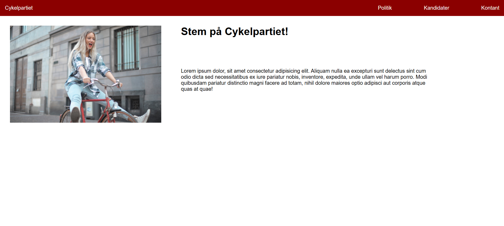
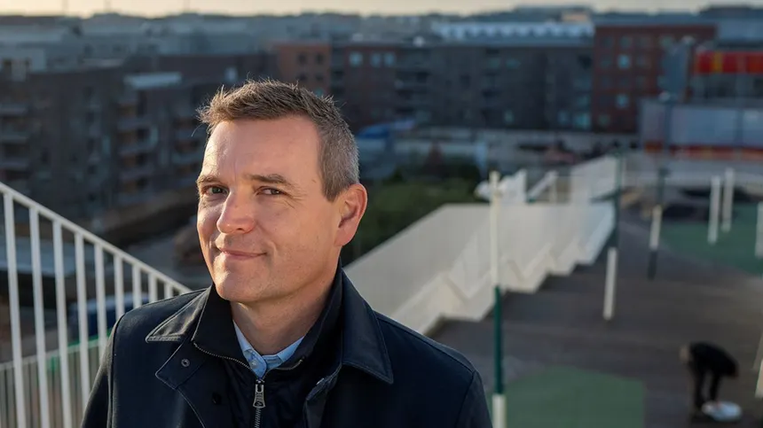

Flow 2 – Hjemmesideproduktion
I Flow 2 lærte vi grundlæggende HTML, CSS og flexbox-layout. Vi lavede nogle øvelser som funky farver øvelsen, hvor vi skulle lave en kopi af en hjemmeside med farvegradient. Så var der HTMl hvor vi øvede semantisk struktur og lærte om at lave en flexbox og hvad de generale ting er. Flow Opgaven bestod i at udvikle to små websites: et humoristisk "Cykelpartiet"-site og et politisk minisite for en kommunalvalgskandidat.
Website 1 – Cykelpartiet
En farverig, kampagneagtig én-sides hjemmeside med fokus på flexbox-layout og mobilmenu.

Website 2 – Kommunalvalg Kandidat
Et lille, realistisk microsite med tre undersider: forside, mærkesager
og kandidatinfo. Fokus på navigation, responsivitet og flexbox-layout.
Jeg valgte at lave en side om Jakob Næsager som var borgmester og en
valgkandidat da den blev lavet.
Disclaimer: Sitet er fiktivt og lavet udelukkende til
undervisningsbrug. Det er ikke det officielle site for nogen rigtig
kandidat.
